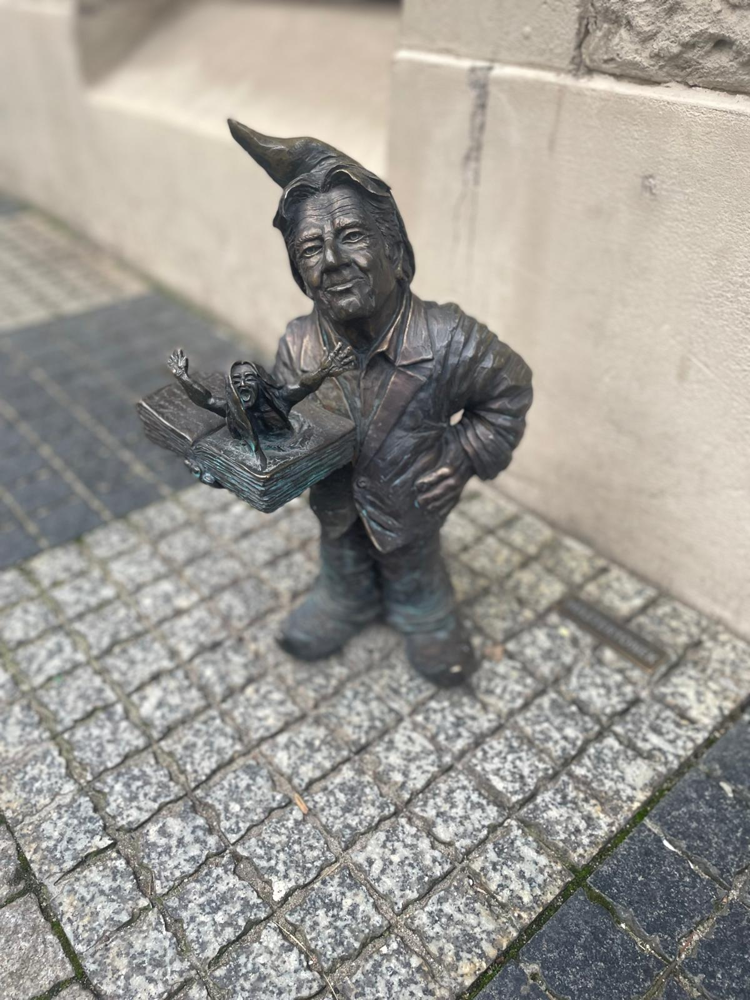
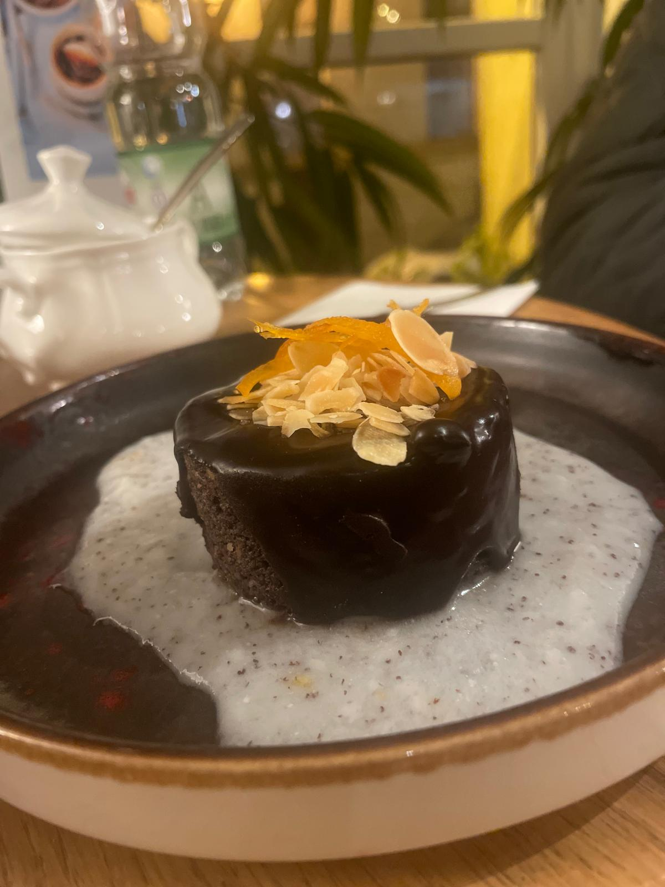
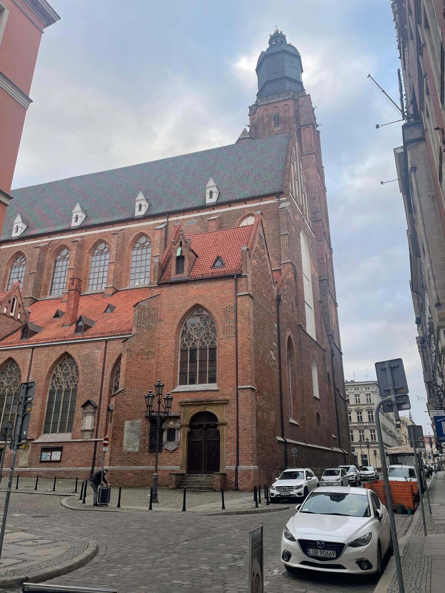
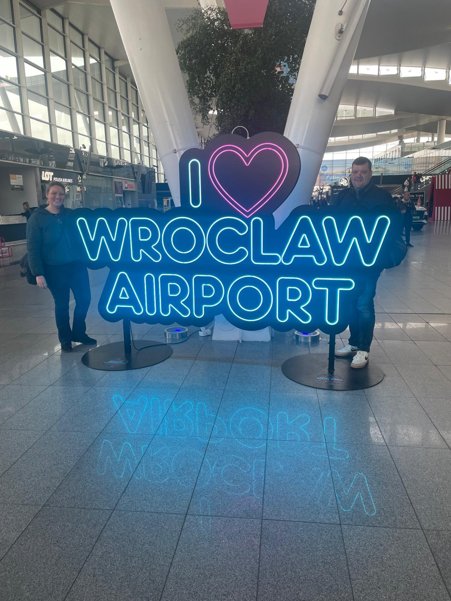
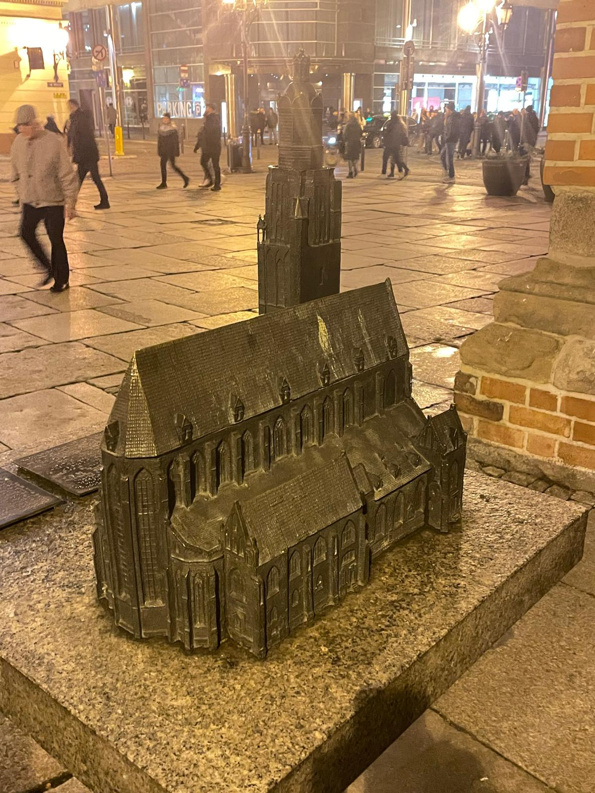
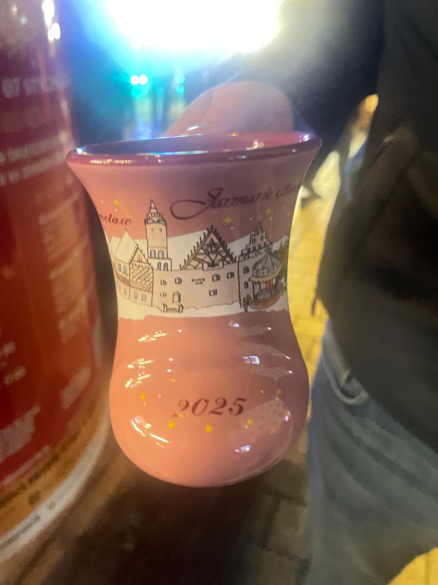

We headed to Wrocław in December 2025 for the Christmas markets — and got rather more than we bargained for. A dramatic first night, a magical Saturday afternoon wandering the markets, extraordinary architecture, brilliant food and drink, and some of the friendliest people we have ever met. Wrocław in December is cold, beautiful and absolutely worth it.
What this trip gave us:
The story
We flew into Wrocław on a Friday evening in December 2025, full of excitement for the Christmas markets. What followed was not quite what we had planned — a friend took a turn in the pub and we found ourselves navigating a Polish hospital for the rest of the night. Not the start we had imagined, but a story we will be telling for years.
The Polish healthcare staff were brilliant — warm, professional and genuinely kind. A reminder that the friendliness of the Wrocław people extends well beyond the city's restaurants and market stalls.
By Saturday afternoon we were out and about, and Wrocław more than made up for the rocky start. The Christmas market on the Rynek is genuinely one of the most beautiful we have ever seen — hundreds of wooden stalls, the smell of mulled wine and roasted chestnuts in the air, and the stunning baroque buildings of the Old Town lit up all around. It is the kind of atmosphere that makes you feel like you have stepped into a Christmas card.
The food was brilliant and remarkably good value — pierogis, hearty Polish soups and excellent drinks that barely dented the wallet. Everything in Wrocław is affordable compared to most Western European cities, which makes it a brilliant destination for a weekend break.
We flew home on Sunday morning with tired legs, warm hearts and one very good story. Wrocław — we will absolutely be back.
One of the best in Europe — the Rynek market is magical, with hundreds of stalls, mulled wine and the most beautiful backdrop of baroque Old Town buildings lit up at night.
A stunning Gothic cathedral right in the heart of the Old Town. Beautiful inside and out, and absolutely spectacular when lit up in the December evening.
Over 300 tiny bronze gnome statues hidden all around the city — hunting for them is one of the most fun things you can do and keeps you exploring every corner.
A beautiful boutique hotel right in the Old Town — stylish, warm and perfectly located for exploring the markets and the city on foot.
Pierogis, hearty soups, grilled meats and mulled everything — Polish food is warming, delicious and incredibly good value. You will eat brilliantly without spending much.
Genuinely some of the friendliest we have encountered anywhere — warm, welcoming and helpful in every situation. Even the unexpected ones.
From the famous Wrocław dwarfs and the stunning cathedral to the markets, the food and the warm glow of a December evening in the Old Town.






Watch our shorts
Three reels from our Wrocław weekend — the stunning cathedral, the magical Christmas market atmosphere and a look inside the beautiful Art Hotel.
⛪ St. Elizabeth's Cathedral
🎄 The Christmas Market
🏨 The Art Hotel
Want to see more of Poland beyond Wrocław? TourRadar has a brilliant classic Poland tour that takes in the best the country has to offer.
Poland is an extraordinary country — from the beauty of Wrocław and Kraków to the history of Warsaw and the stunning Tatra Mountains. A guided tour is a brilliant way to take it all in without spending your holiday coordinating every leg yourself.
Disclosure: This is an affiliate link. If you book through it we may earn a small commission at no extra cost to you.
Old Town tours, Christmas market experiences, day trips and the best of Wrocław — often cheaper than booking at the door.
Disclosure: If you book through these links we may earn a small commission at no extra cost to you.
From Old Town walking tours and Christmas market experiences to dwarf hunts and day trips — browse Wrocław activities here:
Disclosure: If you book through these links we may earn a small commission at no extra cost to you.
Common questions
What to pack for Wrocław in winter
Wrocław in December is seriously cold — think 0°C or below with wind chill. This is not the time for light layers and sandals. Wrap up properly and you will have an amazing time. These are the things we would not leave home without.
The secret weapon against the cold. A good thermal base layer under your clothes makes a massive difference when you are out in sub-zero temperatures for long periods.
View on Amazon →Wrocław's cobbled streets can be icy and wet in December. Warm, waterproof boots with a good grip are essential — your feet will thank you after a full day out.
View on Amazon →Your hands and head will get very cold very quickly at the markets. Thick gloves and a proper warm hat are absolutely essential — don't forget them.
View on Amazon →Cold weather drains phone batteries incredibly fast. A power bank is even more essential in winter than in summer — keep it in an inside pocket to stop it dying in the cold.
View on Amazon →Handy for maps, bookings and staying connected without paying roaming charges — especially useful for navigating the Old Town and finding those hidden dwarfs!
View on Amazon →Poland uses Type C and E plugs — different to Ireland. Don't arrive on a cold December evening with nothing charged.
View on Amazon →Useful for carrying extra layers, a water bottle and any market purchases. Keep it light enough that it doesn't slow you down on a full day exploring.
View on Amazon →Always worth having — and as our trip proved, you never quite know when it might come in handy. Better to have it and not need it!
View on Amazon →Disclosure: These are Amazon affiliate links. If you buy through them we may earn a small commission at no extra cost to you. These are all things we'd genuinely pack for a winter trip to Wrocław.
Wrocław is one of Central Europe's most beautiful and underrated cities — and at Christmas it is absolutely magical. Wrap up warm, book your flights and go. You will not regret it.
Affiliate disclosure: if you book through our links we may earn a small commission at no cost to you. We only recommend trips and experiences we'd be happy to stand over.